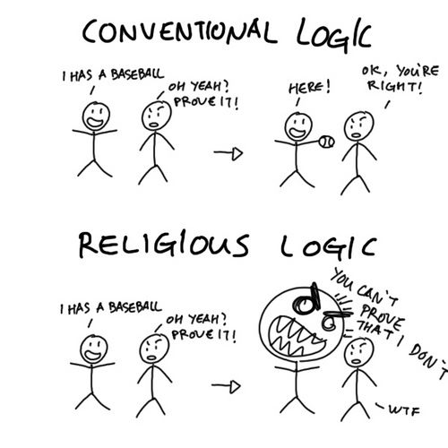
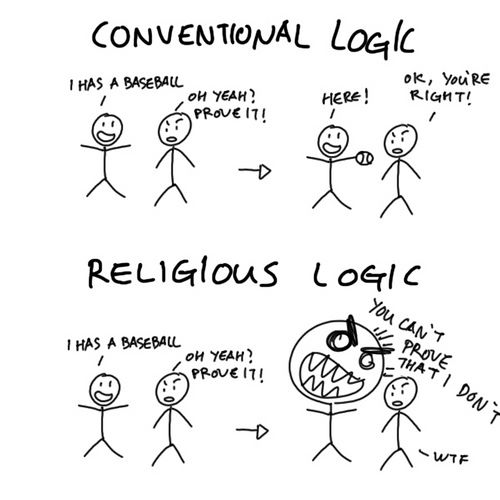

Oh, right. My apologies. I found the comic finally, too:


Oh, right. My apologies. I found the comic finally, too:

What about
Man 1: I have a baseball bat.
Man 2: Prove it.
Man 1: Here. shows cricket bat
Man 2: Ehm…
?
(And yes, this happens as well)
Not being able to read or understand simple concepts or definitions is not madness.
That line of reasoning is exactly what made go from “meh… I suppose it’s remotely possible” to “no, there’s no god.”
OMG, you are such an ignorant. Do you seriously think that agnostic is also a person who believe there can be no proof that God doesn’t exist while admitting that he can’t exist? Sheesh…
Then I’m sorry that I’ve ruined your statistics, now it’s not “every” anymore  .
.
Fine, then replace it with “liquid water exists on Callisto”. Better now? 
If people called your cat a dinner table, then the term “dinner table” would be simply ambiguous, it wouldn’t mean that your cat is a piece of furniture.
And why should I take your word for it? Most of the definitions of “Atheism” that I checked explain it as denying God’s existence. “Denying” isn’t simply “lack of belief”.
Oh, I’m sure that you know what a god is - a creator of the world and human kind, does it ring a bell? Do you believe that the world was created with anyone’s help, yes or no? If you cannot answer this question, then how can you call yourself an Atheist? The logic is simple - if there is no creator of the world, there is no God.
Knowing and believing, are those really that different? Where is the boundary between knowledge and belief? Isn’t knowledge just a very deep belief?
I don’t even know what to consider myself. I know there’s no god, but I think in the future mankind could unlock enough secrets about the laws of physics to be considered gods by today’s standards.
Oh for god’s sake.
For the last time. An agnostic, by your very own definition is someone that believes there can be no proof either way. An atheist is someone who believes there’s no way god can exist.
For example “God doesn’t exist. There’s no evidence to support whether he does or not, but there’s absolutely no reason for him to exist so I’m sticking with my opinion that he absolutely does not exist.”
Why is this so hard for you?
Also, “an ignorant” doesn’t make much sense.
An agnostic doesn’t admit that god exists. An agnostic DOESN’T KNOW if god exists.
I agree with soup, there’s no way being an Agnostic Atheist makes sense.
I don’t know and I don’t believe. How hard is that?
If atheism is “the belief that there’s no god”, then I’m not an “atheist”. I don’t know what I’d be. Can you assist? What do you call someone that doesn’t believe that a god exists?
Difference between belief and knowledge:
Belief is the acceptance of something as being true.
Knowledge is the awareness of things and the understanding thereof.
I can know about something but not believe in it. Here’s how:
I know that Nazism exists. I am aware that it exists and I understand the concept. I don’t /believe/ in Nazism because I don’t accept their philosophy as being true. I believe that Nazism exists. I know it exists. I don’t believe in Nazism, though.
Another example: I believe there to be dark matter due to the evidence thereof. But there’s no proof that it exists (yet) so I don’t know if it really does exist.
Once more (because I’m not going to say this again):
I do not know and I do not believe in the existence of a God.
Whatever you want to call that, that’s me. I call it atheism. You can call it a dinner table for all I care.
This “my very own definition” isn’t the-one-and-final-definition, which I already pointed out. I assumed that people I’m talking to should now the general meaning of “Agnostic”, so there was no need to give a precise, scientific definition and you are sticking to it like to some golden fleece. Well, now I know I assumed wrong.
I’ll repeat on more time - a person who deny God’s existence is NOT an Agnostic! See the quote from my last post. Or maybe you wanted to say that my definition is imprecise, but somehow I missed that. Anyway, in that case I’M SORRY, YOU ARE RIGHT, THIS DEFINITION IS WRONG! I’ve however seen that as you wanted to prove that an Atheist can be an Agnostic at the same time.
I suggest you being more self-critical. If I have trouble with something then it’s definitely not understanding but rather explaining.
Thanks, I’ll try better next time.
This is what I’m trying to prove whole the time…
@danielsangeo - I’ll answer your post when I get back from work.
Waiting to see if “The God” is going to be contributing to this forum or if he is only here to be a shit stirrer.
[COLOR=‘Cyan’]Edit: NVM
Either Agnostic or Atheist. Agnostic doesn’t believe in God but doesn’t claim that he can’t exist; Atheist doesn’t believe in God and is convinced that he does not exist.
So “to know” = “to be 100% sure” and “to believe” = “not so sure, but still the best option or lack of other option”.
This only shows that “to believe” is ambiguous, because you cannot accept an ideology as true, you can only preach an ideology.
Strange, I always thought that evidence and proof mean the same thing… Because “I believe there to be dark matter due to the evidence thereof but there’s no evidence that it exists” doesn’t make much sense. Or maybe people believe when there is some evidence, but not enough to be 100%, this is how I should understand that?
I don’t deny that you can not believing and not knowing at the same time. I’m saying that “not knowing” doesn’t mean “being an Agnostic”. I know that I provided a definition that explain it exactly as “not knowing”, but this is not how I (and I believe not only I) “feel” this word.
The thing is that every time someone uses the term Agnostic to describe a personal believe system, you come in and try to correct him/her, so it seams that you are not totally OK with it.
If you’re not going to use the proper definitions, then this is a very pointless argument.
EDIT: Proof is something that proves.
Evidence is something that supports a case.
A lot of definitions include Agnosticism as a branch of Atheism call ‘Soft Atheism’. he reasoning behind it being they they don’t believe god exists, but also don’t believe that he doesn’t. There is a state of mind to be undecided. I’ve never really thought of them believing that they will never be convinced one way or the other. But I guess you could be perpetually unconvinced.
I don’t follow this belief. I go by the stricter definition. I am an Atheist. I don’t think / believe / acknowledge / know of any god. Is there 100% proof? No. But I don’t think it’s really my burden to expect or look for proof. Frankly, if I spent my entire life looking for proof of everything I don’t believe exists, then I would accomplish ANYTHING. Should I spend my entire life looking for PROOF that there never was a Pegasus? No of course not. There is no real evidence, so it would be naive of me to believe it, and just because I can’t find the users manual for existence that says ‘The Pegasus never really existed’ then I don’t think I should waste too much time on every made up thing.
Unless there is some sort of real AND poignant contemporary evidence of a god, then I’m comfortable in believing that there isn’t one. Just because other people believe in something doesn’t mean that I need proof. Do I KNOW anything that I don’t have a closet full of proof about? Well no, but I can mention the evidence I’m aware of that is enough to convince myself. I could be wrong about some of these things of course, but many of these things I would be wrong about also have counter evidence. Religion doesn’t offer any to me, so I put about as much weight to their arguments as someone telling me anything else that is totally ridiculous and without any actual evidence to back it up. Skepticism. Just because I don’t know 100% because there isn’t proof doesn’t mean that I have doubt. It means that I’m not burdened by needing proof. I have evidence supporting my view, which can be extrapolated to a likely truth. When there really is nothing to support the opposing view…well there is a lot of things I don’t disprove. But just because I’m not spending my life disproving wild assertions, doesn’t mean that assertions without evidence gain credibility.
Do I know the ultimate configuration of existence that would end the debate forever? No. It doesn’t mean I’m undecided though. I’ve made the decision that makes sense based on evidence. Religious people have made their decision based on their personal feelings, and ( from what I am able to discern ) what sounds right based on their personal views. They may not have evidence, but they have a widely held belief that is supported by ages of natural functions of the human perception. They see meaning in this natural human tendency. I suppose my view is that an agnostic sees the evidence which makes them question religion, and they see the limit of human understanding as a means to question totally not believing. I do believe there is a middle ‘undecided’ ground.
Can’t really call agnostics theists, but since they aren’t convinced there are no gods, because the evidence isn’t strong enough, you can’t really call them atheists. Agnostics, in my view, do fall in between.
I think people are getting a little distracted by wording here too. Fundamentally, there isn’t a difference between knowing and believing. However, there is a difference between believing and acknowledging belief. I don’t believe in the ideology of Nazi beliefs, however I acknowledge that they do have beliefs. I base this on my belief in the information I have received ( live examples are a kind of information ).
We don’t really KNOW all that much. A lot of the things we KNOW, we just believe based on our perception. It’s all obscure and elusive because you get to question your very definition of existence. It’s best not to get hung up on it.
Then, under your definitions, flawed as they are, I’m an agnostic.
Not quite. To believe is to accept something as being true. To know is to accept something as being true with evidence to back it up. Faith, on the other hand, is to accept something as being true without evidence to back it up.
Sort of. Evidence != Proof. Evidence is a single piece of something that ultimately leads to proof which is a preponderance of the evidence that leads one to be accept something as true. I’ll explain:
A cat is living, breathing creature with pointed ears, fur, whiskers, and slitted pupils.
I have this object here. It has pointed ears, fur, whiskers, and slitted pupils. Is it a cat? No. It doesn’t meet the standard for “proof” even though it has multiple pieces of evidence that would lead one to believe that it is a cat. What is it? It’s a cat plush. It isn’t alive and it’s not breathing.
Back to the dark matter, there is evidence that it exists but there’s no proof yet. I believe it exists but I don’t know.
I’m sorry, but that’s the definition. “Not knowing” means “being an Agnostic”.
Of course I’m not okay with it. Agnosticism isn’t a belief system. It is simply the lack of knowledge. Atheism is a belief system…or, more specifically, an unbelief system. I don’t know AND I don’t believe. I am an agnostic atheist.
And you’re telling me that I’m wrong even though that’s precisely what both words mean.
Agnosticism holds that the existence of god(s) is unknowable.
Atheism holds that there is no belief in the existence of god(s).
I always interpreted those three as following:
Theism:
Belief in gods.
Agnosticism:
Belief that there will never be proof for or against the existence of gods.
or/and
Belief that it doesn’t matter if there are gods or if there are none.
Atheism:
The lack of belief in gods.
Thanks for explaining, I always thought that these are synonyms, in my language they are translated into the same word.
This discussion can go forever so I better end it at this point. The problem is that there is no unified language that would provide a strict definition for every word, so there always will by one group that says that A is B, and the other group that says that A is C. Of course that can lead to problems because these groups won’t understand each other while talking about A.
The other problem is that a meaning of a word sometimes evolves. Or maybe its because of cultural differences I understand the word “Agnosticism” differently. Just one thing I’m sure of - there are other people who understand this word the same way I do. That doesn’t mean that any of us is wrong - no, we just use different “languages”.
Okay, no problem. End of that discussion then. 
Founded in 2004, Leakfree.org became one of the first online communities dedicated to Valve’s Source engine development. It is more famously known for the formation of Black Mesa: Source under the 'Leakfree Modification Team' handle in September 2004.